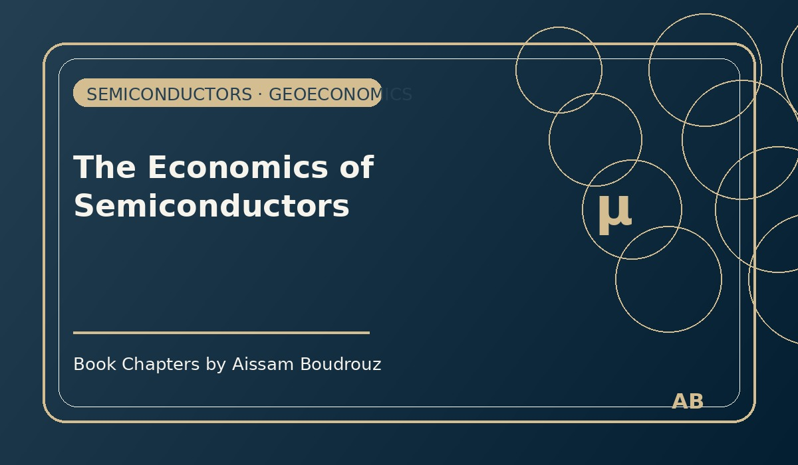

The Economics of Semiconductors
These days, the headlines are filled with tension — the kind that feels both political and technological.
The United States and its allies — the United Kingdom and Australia — are strengthening their military presence in East Asia.
China is responding with its usual mix of calm confidence and quiet warning.
At first glance, it looks like another geopolitical rivalry.
But behind the speeches, alliances, and military drills, there’s something smaller — tiny, in fact — at the center of it all:
the semiconductor.
Page 1 – The invisible heart of modern life
During the COVID crisis, something strange happened in the global economy.
Car manufacturers — Renault, Toyota, Opel, and many others — were forced to stop production, not because of fuel shortages or labor strikes,
but because they ran out of a component no bigger than a fingernail.
A single car today needs, on average, six thousand semiconductor chips — the small electronic brains that power everything from engine control to GPS.
When COVID hit, factories in East Asia — especially in Taiwan and South Korea — had to shut down repeatedly.
Meanwhile, demand shifted.
People locked at home began buying laptops, phones, and household electronics.
So, production moved toward those products,
leaving the car industry without enough chips to keep its lines running.
The result was a global supply shock — one that’s still not fully recovered.
Page 2 – The island that powers the world
Here’s where it gets interesting.
More than 90% of the world’s advanced semiconductor production happens in one place:
Taiwan.
At the center of it all is a single company — the world’s technological crown jewel — that produces chips for nearly every major electronics brand.
China, despite its enormous industrial power, produces only about 10% of its own chips.
That’s a strategic imbalance.
Because if oil was the key input of the industrial age,
then semiconductors are the strategic input of the digital age.
Whoever controls them, controls the future.
Page 3 – When economics meets power
This is why China’s interest in Taiwan isn’t only about history or politics —
it’s also about technology and control.
And it’s why the U.S., the U.K., and Australia formed a new military alliance called AUKUS, focused on defense and deterrence in the Pacific region.
It’s not just a question of sovereignty anymore —
it’s about the supply chain that runs the world’s electronics, communication systems, cars, and even aircraft.
In this game, a shortage of chips isn’t just an economic issue.
It’s a potential security crisis.
Page 4 – Lessons from a microchip
I often think about how fragile globalization really is.
A small island in the Pacific produces components so essential that a single disruption there can slow down the entire global economy.
During the oil crises of the 1970s, we learned that a few oil producers could shake the world.
Today, a few semiconductor producers can do the same — only this time, the threat isn’t in the desert,
it’s in a cleanroom filled with machines that etch microscopic circuits onto silicon.
Page 5 – A new era of interdependence
So yes, the geopolitical noise sounds distant,
but the truth is, every smartphone in our hands and every car we drive is quietly connected to that tiny chip and that small island.
If oil was the blood of the 20th century,
then semiconductors are the neurons of the 21st.
And just like the brain,
a small shock in one area can paralyze the whole system. ⚙️💡